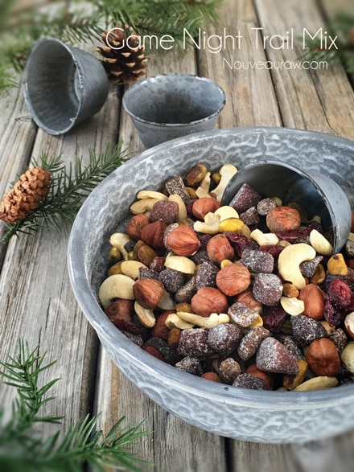
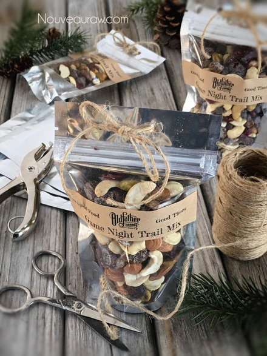
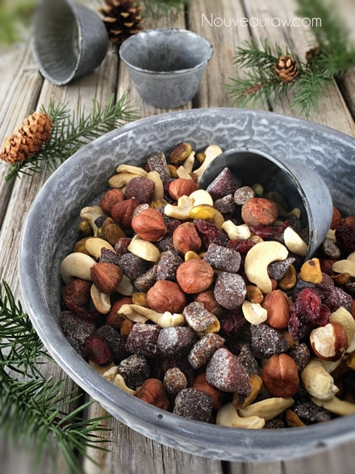
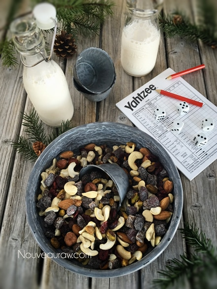
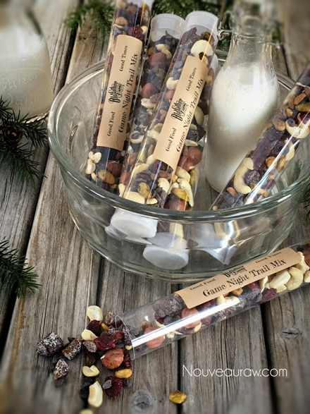

Game Night Trail Mix

~ raw, vegan, gluten-free ~
This recipe was inspired when I created a whole wonderful stockpile of Tootsie Chew candies. When I made those candies, I cut them into 2” pieces and wrapped each one individually. I was busy creating Christmas gifts for my loved ones.
Anyway, I ended up with a bunch of oddball sized pieces when I was finished. So, I cut them into smaller bite-sized chunks and tossed them with a variety of nuts, dried cranberries, and chocolate chips. Scrump-Dilly-Ish-Ous! I will share links below for the candies. You don’t have to make them all… I am just sharing an idea on how you can transform one recipe into another.
The first thing that came to mind was GAME NIGHT! Peering down at the bowl, I could envision many different hands diving into the bowl at the same time, scrounging for a handful of goodness.
For creative gift packaging, I had ordered some Clear Gumball Tubes and loaded them up with the trail mix. I think they turned out adorable! To complete the gift idea, I had a set of personalized deck of playing cards made for a handful of friends. Shutterfly.com is just one of the many places that do them.
Also for not just gift-giving, but also for quick-grab-and-go-snacks for Bob, I made up some small bags. They are 4 x 6” bags and hold about 1/2 cup. You can find them (here). I hope you enjoy this recipe.
 Ingredients:
Ingredients:
yields 4 cups
Preparation:
- In a large mixing bowl, combine the Tootsie chew pieces, cashews, pistachios, hazelnuts, cranberries, and chocolate chips. Toss together and try not to eat the whole bowl. Seriously… you will get a tummy ache.
- I used a mixture of the following candies, but remember you don’t have to make them all in order to make this recipe. Raspberry Chocolate Tootsie Chews, Strawberry Tootsie Chews,
- Leave on the counter in an open bowl for easy-snacking-access. Or store in an airtight container for many weeks. You can also store this mix in the fridge or freezer to extend the shelf life.





© AmieSue.com